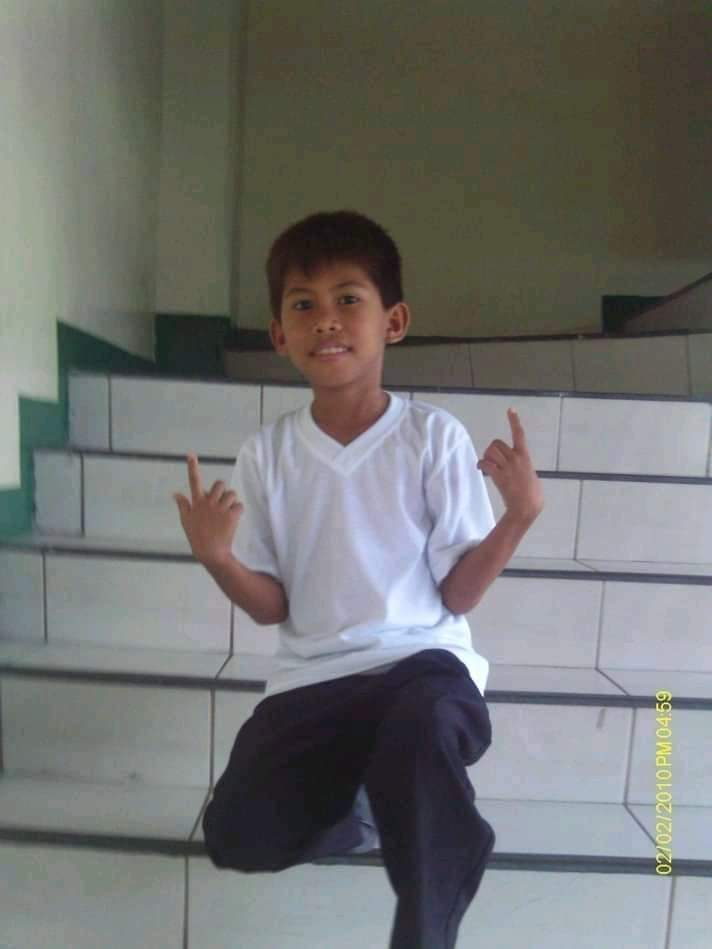

My elementary experience is full of fun and excitement it is hard and full of adventure,my elementary life is very challenging and I am proud to complete it.waking up early is not easy this part of being a student is what I hated most during the first part of my studies while I was at lower grade,my mother wake me up in the morning,my mother had a hard time as well as in feeding me I do not eat on my own until I reached Grade IV.
